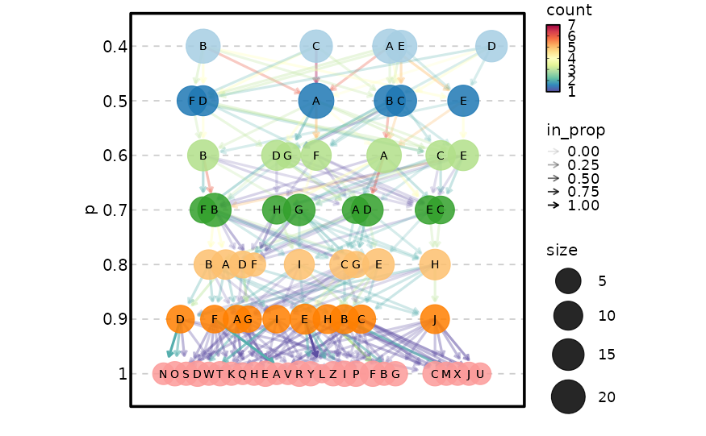
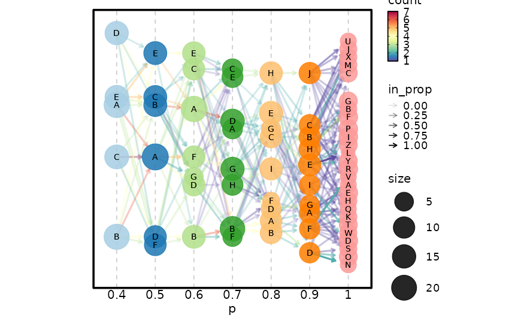
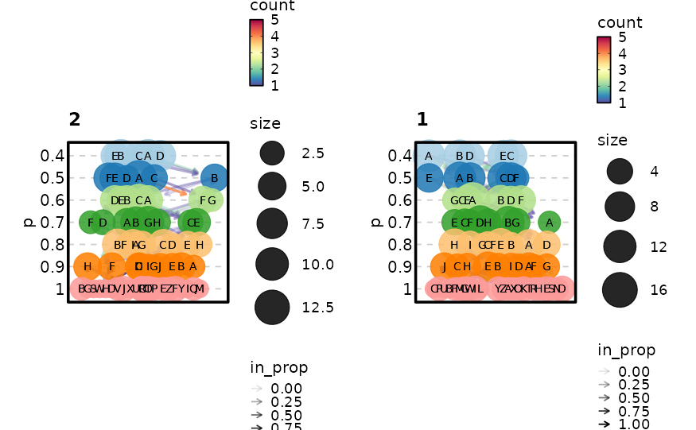
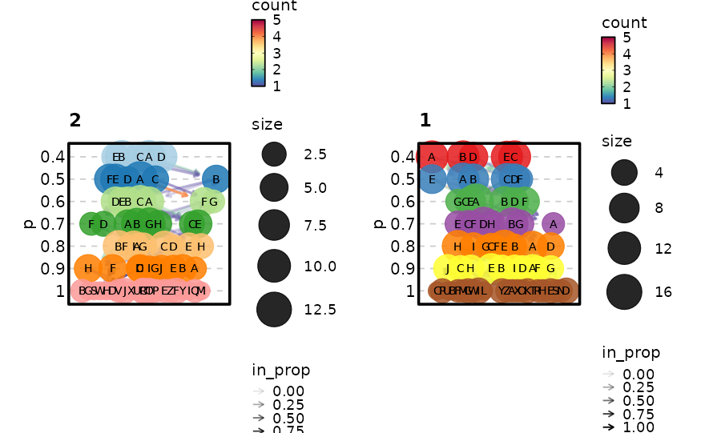

Creates a clustree (clustering tree) plot visualising how cluster assignments change across increasing clustering resolutions. The plot helps identify stable clustering solutions and understand the hierarchical relationships among clusters at different resolution thresholds.
The function expects a data frame with columns named by a common
prefix followed by numeric resolution values (e.g.
"res_0.1", "res_0.3", "res_0.5"). Each column
contains cluster labels (factor or character) for every observation at
that resolution.
Internally, the function uses clustree::clustree() to compute a
ggraph-based tree layout where nodes are clusters and edges
represent cells transitioning between clusters at adjacent resolutions.
Edge colour and width encode the number of transitioning cells.
Key features:
Resolution-level node colouring — each resolution receives a distinct colour from the selected
palette.Edge gradient — edges are coloured by transition count using a separate
edge_palettecolour gradient.Flip support —
flip = TRUEplaces resolutions on the x-axis for left-to-right reading.Split by groups —
split_bygenerates per-group clustree plots that are combined viapatchwork.Automatic dimensions — plot height and width are automatically computed based on the number of resolutions, clusters, and the legend configuration.
Usage
ClustreePlot(
data,
prefix,
flip = FALSE,
split_by = NULL,
split_by_sep = "_",
palette = "Paired",
palcolor = NULL,
palreverse = FALSE,
edge_palette = "Spectral",
edge_palcolor = NULL,
aspect.ratio = 1,
legend.position = "right",
legend.direction = "vertical",
title = NULL,
subtitle = NULL,
xlab = NULL,
ylab = NULL,
expand = c(0.1, 0.1),
theme = "theme_this",
theme_args = list(),
combine = TRUE,
nrow = NULL,
ncol = NULL,
byrow = TRUE,
seed = 8525,
axes = NULL,
axis_titles = axes,
guides = NULL,
design = NULL,
...
)Arguments
- data
A data frame.
- prefix
A character string specifying the common prefix of the resolution columns in
data. All columns whose names start with this prefix are selected as resolution columns. The suffix after the prefix is parsed as a numeric resolution value. Supports"_"and"."as separators between the prefix and the resolution value (e.g."res_0.5"or"p.0.5").- flip
A logical value. If
TRUE, the tree is flipped so that resolutions are displayed on the x-axis (left to right) and cluster assignments are shown as row labels on the y-axis. Default:FALSE.- split_by
The column(s) to split data by and generate separate clustree plots for each level. Each split level produces an independent clustree plot via
ClustreePlotAtomic.- split_by_sep
A character string used to concatenate multiple
split_bycolumn values whensplit_byspecifies more than one column. Default:"_".- palette
A character string specifying the palette to use. A named list or vector can be used to specify the palettes for different
split_byvalues.- palcolor
A character string specifying the color to use in the palette. A named list can be used to specify the colors for different
split_byvalues. If some values are missing, the values from the palette will be used (palcolor will be NULL for those values).- palreverse
A logical value indicating whether to reverse the palette. Default is FALSE.
- edge_palette
A character string specifying the palette name for the edge colour gradient. Edges are coloured by the number of transitioning cells between clusters at adjacent resolutions, using
ggraph::scale_edge_color_gradientn(). Default:"Spectral".- edge_palcolor
A character vector of custom colours for the edge colour gradient. When
NULL(the default), colours are derived fromedge_palette.- aspect.ratio
A numeric value specifying the aspect ratio of the plot.
- legend.position
A character string specifying the position of the legend. if
waiver(), for single groups, the legend will be "none", otherwise "right".- legend.direction
A character string specifying the direction of the legend.
- title
A character string specifying the title of the plot. A function can be used to generate the title based on the default title. This is useful when split_by is used and the title needs to be dynamic.
- subtitle
A character string specifying the subtitle of the plot.
- xlab
A character string specifying the x-axis label.
- ylab
A character string specifying the y-axis label.
- expand
The values to expand the x and y axes. It is like CSS padding. When a single value is provided, it is used for both axes on both sides. When two values are provided, the first value is used for the top/bottom side and the second value is used for the left/right side. When three values are provided, the first value is used for the top side, the second value is used for the left/right side, and the third value is used for the bottom side. When four values are provided, the values are used for the top, right, bottom, and left sides, respectively. You can also use a named vector to specify the values for each side. When the axis is discrete, the values will be applied as 'add' to the 'expansion' function. When the axis is continuous, the values will be applied as 'mult' to the 'expansion' function. See also https://ggplot2.tidyverse.org/reference/expansion.html
- theme
A character string or a theme class (i.e. ggplot2::theme_classic) specifying the theme to use. Default is "theme_this".
- theme_args
A list of arguments to pass to the theme function.
- combine
A logical value. If
TRUE(the default), the list of per-split plots is combined into a singlepatchworkobject. IfFALSE, returns the raw list ofggplotobjects.- nrow, ncol, byrow
Integers controlling the layout of combined plots via
patchwork::wrap_plots().byrow = TRUE(default) fills the layout row-wise. Ignored whendesignis provided.- seed
The random seed for reproducibility. Passed to
validate_common_args(). Default:8525.- axes, axis_titles
Strings controlling how axes and axis titles are handled across combined plots. Passed to
combine_plots(). See?patchwork::wrap_plotsfor options ("keep","collect","collect_x","collect_y").- guides
A string controlling guide collection across combined plots. Passed to
combine_plots().- design
A custom layout specification for combined plots. Passed to
combine_plots(). When specified,nrow,ncol, andbyroware ignored.- ...
Additional arguments passed to
clustree::clustree(). Commonly used overrides includenode_size_range,node_text_size,layout(default:"sugiyama"),show_axis, andnode_text_colour. Note thatx(the data) andprefixare set internally and cannot be overridden here.
Value
A ggplot object (single plot), a patchwork object
(when combine = TRUE with split_by), or a list of
ggplot objects (when combine = FALSE).
split_by Workflow (ClustreePlot)
When split_by is provided, the following pipeline executes:
Argument validation —
validate_common_args()checks theseedvalue and sets the random seed.Theme resolution —
process_theme()resolves thethemestring or function to a theme function.Split column validation —
check_columns()resolvessplit_bywithforce_factor = TRUE, allow_multi = TRUE, concat_multi = TRUE.Data splitting — splits
databysplit_bylevels (unused levels dropped), preserving factor level order.Per-split palette / colour / legend —
check_palette(),check_palcolor(), andcheck_legend()resolve per-split overrides forpalette,palcolor,legend.position, andlegend.direction.Per-split title — when
titleis a function, it receives the default title (the split level name) and can return a custom string; otherwisetitle %||% split_levelis used.Dispatch — each split subset is passed to
ClustreePlotAtomicwith the per-split parameters.Combination —
combine_plots()assembles the list of plots viapatchwork::wrap_plots, honouringnrow/ncol/byrow/design.
Examples
# \donttest{
set.seed(8525)
N <- 100
data <- data.frame(
p.0.4 = sample(LETTERS[1:5], N, replace = TRUE),
p.0.5 = sample(LETTERS[1:6], N, replace = TRUE),
p.0.6 = sample(LETTERS[1:7], N, replace = TRUE),
p.0.7 = sample(LETTERS[1:8], N, replace = TRUE),
p.0.8 = sample(LETTERS[1:9], N, replace = TRUE),
p.0.9 = sample(LETTERS[1:10], N, replace = TRUE),
p.1 = sample(LETTERS[1:30], N, replace = TRUE),
split = sample(1:2, N, replace = TRUE)
)
# --- Basic clustree plot ---
ClustreePlot(data, prefix = "p")

# --- Flipped layout (resolutions on x-axis) ---
ClustreePlot(data, prefix = "p", flip = TRUE)

# --- Split by group ---
ClustreePlot(data, prefix = "p", split_by = "split")

# --- Split by group with per-split palettes ---
ClustreePlot(data, prefix = "p", split_by = "split",
palette = c("1" = "Set1", "2" = "Paired"))

# }